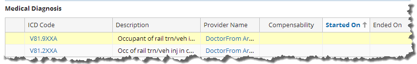

Working with medical details for workers’ compensations claims
A Medical Details exposure is typically created as a result of information entered in the New Claim wizard during the creation of a workers' compensation claim. The Medical Details screen is organized into Summary, Details, Medical Case Mgmt, and ISO cards.
There are several actions that you can perform in the Medical Details screen.
- You can edit certain fields, such as Alternate Contact or Nurse Case Manager.
- You can assign the exposure to someone else, either by using automated assignment or by directly finding another adjuster.
- You can choose to close the Medical Details exposure by selecting Close Exposure. You then select an Outcome for the closure, and choices include Completed, Duplicate, Fraud, Mistake, Payments complete, and Unnecessary.
- You can create a reserve from this screen. If you select Create Reserve, the items added or changed on the Set Reserves screen are submitted as a group. Any line item that has not been changed is not saved. Any line item with Pending Approval reserves that has its New Available Reserves set to equal its Currently Available reserves will have those Pending Approval reserves deleted. Comments are saved only when another field on the line has changed.
Summary
The Summary card provides the following sections:
- Exposure – Contains basic information related to the exposure, including the adjuster, the creation date, the validation level, and any alternate contacts.
- Financials – Lists the remaining reserves, future payments, total paid, total recoveries, and net total incurred.
- Coding – Records basic information collected when the claim was first entered into the system, such as the segment and handling strategy.
- Body Parts – Lists the physical areas affected, which are determined either through the New Claim wizard or later in the Loss Details screen.
- Medical Diagnosis – Shows any codes that an adjuster has entered. You enter or update codes from the Medical Case Mgmt tab.
- Activities – Lists any activities associated with this Medical Details exposure.
- Medical Notes – Lists any medical notes made concerning the exposure. Choose to create a medical note for the claim.
Details
The Details card provides the following sections:
- Medical Provider Network – Confirms if the physician and the injured worker are in the medical provider network.
- Maximum Medical Improvement –
Details the date on which the claimant has reached the Maximum Medical
Improvement (MMI) limit, defined
by one of the following events:
- The claimant’s condition cannot be improved any further.
- The claimant has reached a treatment plateau.
- The claimant has fully recovered from the injury.
- The clamant's medical condition has stabilized, and no major medical or emotional change is expected.
When a claimant who is receiving workers’ compensation benefits reaches the MMI limit, their condition is assessed and a degree of permanent or partial impairment is determined. This degree impacts the claimant’s benefit amount.
The MMI limit indicates that treatment options have been exhausted. Temporary disability payments are terminated and a settlement is worked out regarding the condition of the worker at this point.
- Initial Provider Contact – Section in which the initial provider records the complaints as reported by the claimant and assesses the condition based on the provider’s medical background.
- First Report of Injury – Captures critical information, including the attending doctor, the diagnosis, and if further treatment is needed.
- Settlement – Indicates if there was a settlement date and method.
Medical case mgmt
The Medical Case Mgmt card provides the following sections:
- Medical Personnel – Information on the medical people involved.
- Medical Treatment Approvals – Lists the medical treatments that have been approved for the claimant.
- Medical Actions and Information – Lists the medical actions that were reported, such as the condition of the claimant, who the provider was, source of information, treatment status, and the next follow-up date.
- Medical Diagnosis – Section to add, edit, or remove a medical diagnosis,
make a diagnosis primary, and reconfirm the diagnosis. The medical diagnosis
uses ICD codes that are accepted worldwide. Using these codes ensures that the
diagnosis matches the treatment.
Workers' compensation is one of several lines of business that uses ICD codes as seen in the Medical Diagnosis section and shown in the following. See Managing icd codes to learn more about these codes.

Typically, an adjuster receives a form with one or more ICD codes. You can enter these codes on the Medical Case Management screen and you can also view them on the Summary tab of the Medical Details screen. If there is more than one code, then you must make one primary. Making a code primary is necessary for sovereign organizations, such as the ISO in the United States.
You can also enter dates and comments and indicate whether there is compensability on the exposure. This check box serves as a reminder that the incident is compensable. You can also select a diagnosis and reconfirm it. Reconfirming has two purposes. It serves as a reminder that you looked at the medical diagnosis and are certain that it still applies. It also adds an entry to the Diagnosis Notes and Medical Notes sections of the screen.
The Medical Diagnosis section is located in different areas of the user interface depending on the line of business. For example, in a personal auto claim, you would navigate to the Loss Details screen and click the name of a person in the Injuries section. The Medical Diagnosis section is then accessible on the Injury Incident screen.
- IME Medical Actions – Lists any independent medical evaluations by experts.
- Drugs Prescribed – Lists the drugs prescribed for the injured party, the prescribing physician, date of prescription, and expiration date.